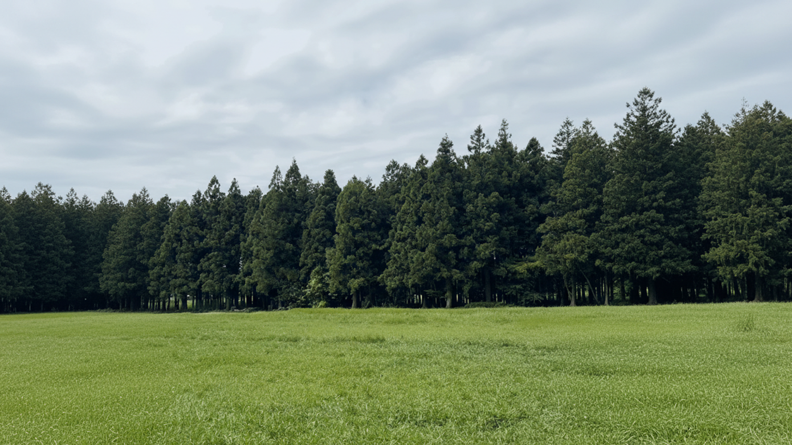
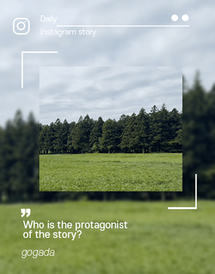

드라마에 나온 장소
어디일까?
고가바로 가면
내가 주인공이 될 수 있어요!

가장 인기있는 촬영지는
어디일까요?

지역별로 찾아서
주인공이 되어보아요!
AI가 인기있는 장소 후기를 골랐어요.
DRAMAㆍMOVIE
- #미스터 션샤인
- #각시탈
- #구르미 그린 달빛
- #헤어질 결심
- #우리들의 블루스
- #웰컴투 삼달리
- #리틀 포레스트
- #스물다섯 스물하나
- #파묘
- #폭싹 속았수다
- #선재 업고 튀어
- #폭군의 셰프
- #왕과 사는 남자
- #동백꽃 필 무렵
- #이태원 클라쓰
- #케이팝 데몬 헌터스
- #미스터 션샤인
- #각시탈
- #구르미 그린 달빛
- #헤어질 결심
- #우리들의 블루스
- #웰컴투 삼달리
- #리틀 포레스트
- #스물다섯 스물하나
- #파묘
- #폭싹 속았수다
- #선재 업고 튀어
- #폭군의 셰프
- #왕과 사는 남자
- #동백꽃 필 무렵
- #이태원 클라쓰
- #케이팝 데몬 헌터스